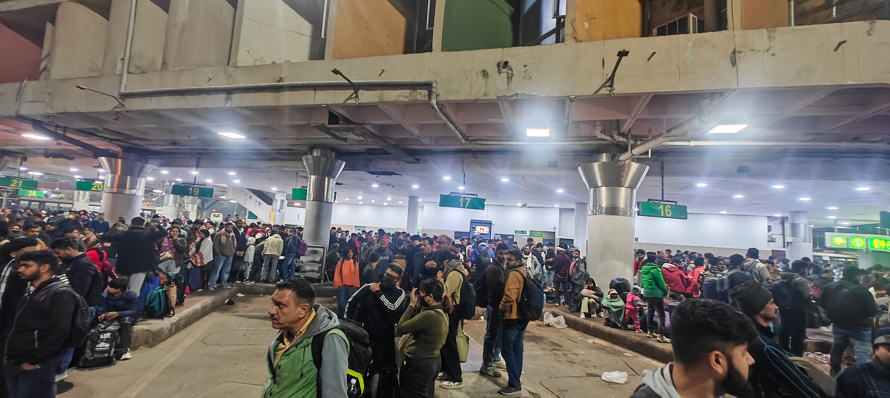
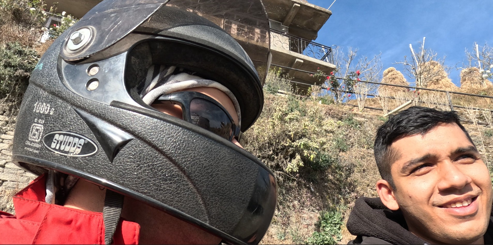
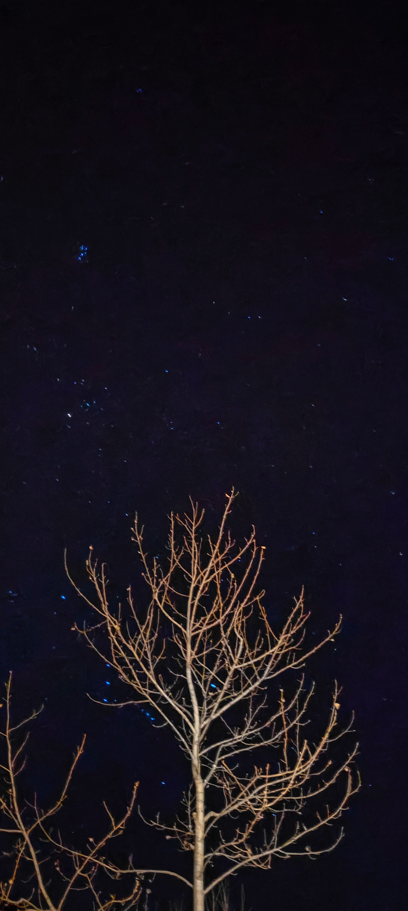
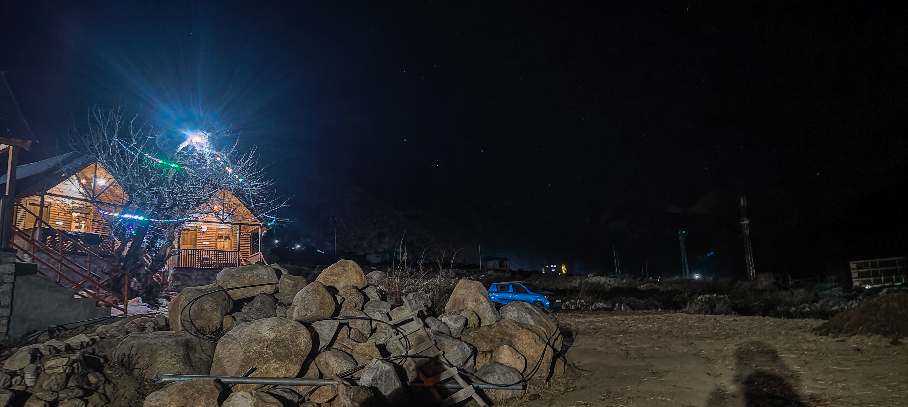

Chitkul — The Last Village Before the Border
Chitkul — The Last Village Before the Border
Let me take you to a place where roads decide your fate.
Yes, you read that right.
Some journeys begin with a destination in mind. Others begin the moment the road starts asking questions.
Chitkul—the last inhabited village on the Indo-Tibetan Road in Himachal Pradesh—is one of those journeys.
Perched at an altitude of nearly 3,450 metres (11,320 feet) in the breathtaking Baspa Valley of Kinnaur, Chitkul
is the final village where civilians are allowed before the Indo-Tibetan border. Beyond this point, the roads
continue only for the Indian Army. The village is home to centuries-old wooden houses, apple orchards, welcoming
locals, and landscapes that seem untouched by time. Here, the Baspa River flows with an untamed energy, snow-covered
peaks guard the horizon, and every breath feels a little lighter than the one before.
But I wasn't just looking for another mountain destination.
I was searching for the feeling that makes your heart race, your palms sweat, and your soul come alive.
Somewhere between the endless hairpin bends, narrow cliffside roads, roaring rivers, and unpredictable mountain
passes, I found exactly what I had been looking for.
Every turn felt like a challenge.
Every kilometre tested our patience, courage, and trust in the road ahead. One moment we were driving beside
towering mountains, and the next we were squeezing through roads carved into sheer rock faces with nothing but
a deep valley below. There were moments when the silence inside the car said more than words ever could. Every
obstacle felt like the mountains asking a simple question:
"How badly do you want to reach Chitkul?"
It didn't feel like just another road trip.
It felt like an invitation that had to be earned.
And when we finally passed its test, everything changed.
The mountains opened up.The valley embraced us.
The icy Baspa River sparkled beneath the afternoon sun, colourful wooden homes stood peacefully against a backdrop
of snow-covered peaks, prayer flags danced with the mountain wind, and the crisp Himalayan air carried a calm unlike
anything we had experienced before.
The silence spoke louder than words ever could.
It welcomed us with open arms and revealed landscapes so surreal that no photograph, drone shot, or sentence could
ever truly capture them.
Some places are meant to be seen. A few are meant to be felt.
Chitkul belongs to the second kind.
With Ladakh, I found a dream I had chased for years. With Barot, I found the peace that taught me to slow down. But
with Chitkul, I found adrenaline—the kind that awakens a part of you, you never knew existed.
It reminded me that the greatest adventures begin where comfort ends. That the best roads aren't always the easiest
ones. And that sometimes, the places worth reaching first make sure you're worthy of arriving.
Chitkul wasn't simply another destination on the map. It became a reminder that adventure isn't measured by kilometres
travelled, but by the moments that leave your heart beating a little faster and your perspective a little wider.

When the Mountains Called
It was a Wednesday night, followed by a long weekend of Christmas.
We knew there would be crowds. After all, a long weekend in North India usually means one thing—everyone heads towards
the mountains. Himachal Pradesh and Uttarakhand become the perfect escape for people looking to trade traffic for pine
forests, deadlines for sunsets, and city noise for the sound of rivers.
We were no different.
But the moment we reached the bus stand, reality hit us.
The crowd was overwhelming.
Everywhere we looked, there were backpacks, trekking shoes, cameras hanging around necks, and people just as excited as
we were. For a moment, a thought crossed my mind—if the journey itself is this crowded, will we even get to experience
the peace we were travelling so far to find? We had come searching for quiet mountains, not endless queues of tourists.
With those thoughts running through our heads, we boarded our HRTC bus from Delhi to Shimla.
The bus was completely packed. No empty seats. No extra space. Just travellers carrying the same dream—to leave the city
behind, even if only for a few days.
The six of us somehow settled into our seats, adjusting our backpacks and finding whatever little comfort we could.
Excitement filled the bus, and conversations about the journey had already begun.
"Bro, with this much rush, there's no way we'll be able to sleep tonight."
Someone immediately agreed. Everyone was busy discussing the traffic, the crowd, and how exhausting the journey ahead
was going to be.
I just smiled. I handed my bag to the person sitting beside me and said, "Hold this for a second." The engine came to
life. The bus rolled out of Delhi. And before anyone could finish the next conversation...
...I was asleep.
Years of travelling have taught me one simple lesson—never waste the opportunity to sleep before a mountain adventure.
I knew the next few days would be filled with endless roads, early mornings, unexpected detours, and memories waiting
to be made. If I could borrow a few hours of sleep now, I'd thank myself later.
While everyone else was still figuring out how they'd survive the overnight journey, I had already disappeared into my
own little world.
Sometimes, the first step of an adventure isn't taking the road. It's closing your eyes and letting the journey begin.
 From Dreams to the Hills
From Dreams to the Hills
The next thing I remember...
The bus came to a halt.
I opened my eyes, stretched a little, looked outside the window...
Shimla.
For me, it felt like instant transmission from Dragon Ball Z. One moment I was asleep in Delhi, and the next...
Zoop!
I was standing in the middle of the mountains.
If only every journey worked like that.
It was around 5 in the morning when we stepped off the bus at Shimla ISBT. The air felt different—cold, fresh, and carrying that
unmistakable mountain scent that instantly tells you you're far away from the city. The roads were still waking up, the streets
were quiet, and the sky was slowly changing colours as dawn approached.
Our rental bookings weren't due until 7, so we had two hours to simply... exist.
And honestly, there couldn't have been a better way to begin the day.
A hot cup of tea in our hands. The cool mountain breeze brushing past us. The first rays of sunlight slowly climbing over the
hills. Sometimes, happiness isn't found in grand adventures.
Sometimes, it's found in the silence of a sleepy bus stand with friends beside you and a cup of chai warming your hands.
By seven, it was finally time to hit the road.
We had rented an Alto for our luggage and two bikes for the ride ahead. The plan was simple—but like every mountain trip, nothing
is ever as straightforward as it sounds.
The car was waiting near the bus stand, while the bikes had to be collected from Mall Road.
So a few of us drove the Alto to pick up the bikes, while the others stayed back with the luggage. Once everything was sorted, we
returned to collect the rest of the gang and finally, all six of us were together again, ready to begin the journey we had been
dreaming about for weeks.
But before chasing mountains...
There was one very important mission.
Brunch.
An empty stomach and mountain roads are never a good combination.
We parked our vehicles near Mall Road and started walking through the streets, searching for the perfect place to eat. As we
wandered around, the clouds slowly drifted across the skyline, wrapping themselves around the hills as if the mountains were
putting on a welcome show just for us.
It almost felt like they were saying,
"You've finally made it."
There was only one place on our minds. A place we had visited before.A place we couldn't stop talking about even after our
last trip.
China Town.
The moment we walked in, we knew exactly what we were ordering.
Their momos.
Some meals become memories, and these momos had already earned that title long ago. Soft, juicy, packed with flavour, and paired
with spicy chutneys that somehow tasted even better in the mountain air.
And then there were the drinks.
They weren't just served—they were introduced with a fun little opening style that instantly made everyone smile before taking
the very first sip. It was one of those tiny details that turned a simple meal into an experience.
If you're ever in Shimla, do yourself a favour and stop by this place.
Trust me.
Your stomach will thank you later.
With our hunger finally satisfied and extra food packed for the road ahead, we stepped back outside. The engines came to life.
Helmets were strapped on. Backpacks were secured.
And just like that...
The real journey towards Chitkul had finally begun.

Every Journey Needs a Plot Twist
The first day wasn't about covering hundreds of kilometres.
It was about settling into the rhythm of the mountains.
Our destination for the day was Matiana, a small Himalayan village located about 45–50 kilometres from Shimla. It wasn't a long
ride, and that was exactly the plan. We had intentionally kept the first day's journey shorter so we could start early the next
morning, fresh and ready for the long ride towards Chitkul.
Sometimes, the smartest travel plans are the ones that don't try to do too much.
The ride to Matiana was beautiful.
The city slowly disappeared behind us as dense deodar forests took over. The mountain air became cooler, the traffic became lighter,
and every bend revealed another postcard-worthy view. It wasn't the kind of ride that demanded speed—it was the kind that made you
slow down and simply enjoy being there.
But there was another reason this day was special.
It was Saatwik's birthday. The youngest member of our group. Our little brother.
We had already planned everything—reach the stay, freshen up, cut the cake, play some music, laugh until midnight, and give him a
birthday he'd never forget before heading to Chitkul the next morning.
The plan was perfect. Maybe a little too perfect. Because if there's one thing I've learnt from travelling with Saatwik, it's this:
Whenever the two of us are on the same bike... something always goes wrong.
It's almost become a tradition.
And this trip decided to continue it. Barely a few hundred metres before reaching our stay, the bike started feeling strange. I looked down
and instantly knew what had happened.
A flat tyre.
For a second, we just stared at each other. Then we burst out laughing.
"Seriously? Again?"
The good news? Our stay was only about 300 metres away.
The bad news? This wasn't an ordinary puncture.
Most nearby repair shops refused to touch bikes with disc brakes. What we thought would be a ten-minute stop slowly turned into hours of
asking locals, making phone calls, checking maps, and riding from one mechanic to another, only to hear the same answer again and again.
"Sorry, we can't fix this one."
Just when we were about to accept defeat, one local smiled and pointed towards a small puncture shop. "There's one just down the road."
We couldn't believe it. After spending hours searching all over the area, the solution had been sitting almost next to our stay the entire
time. Within minutes, the tyre was repaired. The bike was ready.
And just like that, the biggest problem of the day became the funniest story of the evening.

Under a Sky Full of Stars
By the time we checked into our stay, the stress of the puncture had already turned into the joke of the day.
The moment our bags touched the floor, the celebration began.
Music echoed through the room, someone connected their playlist, someone else opened the snacks, and every few minutes, one of us would
bring up the flat tyre again. The story somehow became funnier every single time we told it.
"Imagine getting a puncture just 300 metres before the hotel!" None of us could stop laughing. As the evening unfolded, we stepped out
onto the balcony. And that's when the mountains truly welcomed us.
Our stay was a beautiful double-storey wooden cottage, with a balcony that opened straight towards the edge of the mountain. There was
nothing standing between us and the valley below. Layer after layer of mountains stretched endlessly into the horizon, while the sky
slowly transformed into shades of orange, pink, and gold.
For a few moments, nobody said a word. We simply stood there, watching the sun disappear behind the mountains. Some sunsets don't ask
for photographs. They ask for silence. After soaking in the view, it was time for another highlight of the evening.
Dinner.
Luckily for us, we had our very own chef in the group.
The kitchen quickly turned into a battlefield of laughter, instructions, unnecessary advice, and the irresistible aroma of food. Some
chopped vegetables, some stirred the pans, while the rest confidently pretended to help.
Like every trip, the best memories weren't just made while travelling. They were made while cooking together. By the time dinner was
ready, hunger had reached its peak. We gathered around the table, served ourselves generous portions, and enjoyed what felt like the
perfect meal after a long day on the road.
The night, however, was far from over. We carried our chairs outside and settled beneath a sky filled with countless stars. Away from
the city lights, the night felt different. The stars seemed brighter. The air felt colder. The conversations felt deeper.
We spoke about old memories, future plans, old stories, and everything in between. Every few minutes, someone would crack a joke, and
the entire valley would echo with our laughter.
Then the clock struck midnight. It was finally time.
We gathered around Saatwik, wished him a very happy birthday, sang as loudly and as terribly as friends usually do, and watched him
with the biggest smile on his face.
For a while, nothing else mattered. Not tomorrow's ride. Not the long kilometres waiting for us. Not even the alarm that was set
for the early morning. It was just six friends, a birthday, mountains standing silently around us, and a sky full of stars
witnessing every moment.
Around 1 a.m., reality finally caught up with us.
The road to Chitkul was waiting. Morning would arrive sooner than we wanted. Reluctantly, we packed up the celebration, wished
each other good night, and headed inside. The laughter slowly faded. The lights went out.
And as sleep took over, we knew that when the sun rose again, the real adventure would begin.
 Where the Real Journey Began
Where the Real Journey Began
The alarm rang at 5 in the morning, but truth be told, none of us really needed it.
There was a different kind of excitement in the air. Today wasn't just another day on the itinerary. Today was the day we would
finally ride towards Chitkul.
One by one, everyone got ready. Riding jackets were zipped up, helmets were strapped on, luggage was tied securely to the bikes,
and the final checklist began.
"Chargers?"
"Wallet?"
"GoPro batteries?"
"Everyone ready?"
Within a few minutes, the peaceful silence of the mountains was replaced by the roar of our engines.
Around 6:00–6:30 a.m., we rolled out of Matiana. Two bikes leading the way. The little Alto following closely behind, carrying our
luggage and making sure no one was left behind. The roads were almost empty. The morning sun had just begun to paint the mountains
in shades of gold, and the cool Himalayan breeze reminded us why riding through the mountains feels so different from driving
anywhere else. Every curve brought a new view. Every village told a different story.
Apple orchards lined the roads, pine forests stood tall beside us, and every now and then we'd catch a glimpse of rivers flowing
far below, carving their way through the valleys.
There was no destination in our minds anymore. Only the road.
After riding for almost two hours, we decided it was time for a break. Not because we were tired. But because mountain rides demand
respect.
No matter how exciting the roads are, taking timely breaks is just as important. They give your body a chance to recover, your mind
a chance to reset, and your bike a moment to cool down before the next stretch.
And if there's one thing every road trip deserves...
It's a proper roadside breakfast. We pulled over at a small dhaba that looked like it had been feeding travellers for years. The aroma
of freshly made parathas filled the air long before we sat down. One bite in, and we knew we'd made the right decision. Hot, buttery
parathas, fresh curd, spicy pickle, and steaming cups of chai. Simple food. Perfect taste.
Some of the best meals aren't served in fancy restaurants. They're served on steel plates with mountain views.
With our stomachs full and spirits even higher, we got back on the road. The scenery became even more dramatic with every passing kilometre.
The roads hugged the mountains, crossed tiny villages, and followed rivers that sparkled under the afternoon sun. Every now and then, we'd
stop for a photograph, only to realise that the next turn looked even more beautiful than the last.
It was impossible not to fall in love with the journey. Hours later, we reached one of the most important points of the trip.
The road split into two. One led towards Kalpa. The other...
Towards Chitkul.
We paused for a moment. Not because we were confused. But because we knew that from this point onwards, the journey was about to change
completely. The smooth highways were behind us. The easy riding was over. The mountains had one final test waiting for us. To make things
even more intense, the sun had already begun its slow descent behind the peaks.
Golden hour had arrived. And we were still around 40 kilometres away from Chitkul.
Forty kilometres may not sound like much. But in the Himalayas, distance is never measured in kilometres. It's measured in roads.
And the roads ahead were about to become the most unforgettable part of our journey.

Forty Kilometres That Felt Like Forever
If you ask anyone who has been to Chitkul about the journey, they'll probably remember one thing more than anything else—
The last 40 kilometres.
On paper, it's just another stretch of road. In reality, it's where the mountains decide to test you.
The road narrowed with every passing kilometre. Blind corners appeared one after another. On one side stood towering cliffs, while on the
other lay valleys so deep that you didn't dare look down for too long. There were no barriers on many stretches, just enough space for
vehicles to pass, trusting that whoever was coming from the opposite direction would do the same.
It was easily the most thrilling...
And the scariest...
Road I had ever travelled.
As we climbed higher, the sun slowly began disappearing behind the mountains. We thought we'd cover this stretch in about two hours. The
mountains had other plans. Those two hours quietly became four.
We had already been on the road since early morning, hoping to cover nearly 240 kilometres in a single day. The excitement was still there,
but so was the exhaustion. As darkness slowly wrapped around the valley, the road became even more unpredictable.
There were barely any street lights. Just the narrow road ahead... Our bikes... And the Alto following behind us with its headlights lighting
the way.
But somehow, that's when the journey became even more memorable. Instead of worrying about how difficult the road was, we did what friends do
best. We started talking. Loudly. From one bike to another. Sometimes discussing the next stop. Sometimes arguing over music. Sometimes laughing
at absolutely nothing.
The headlights from the Alto became our guide through the darkness, while our conversations kept the fear from taking over. Every laugh made the
road feel a little less intimidating. Every joke reminded us why road trips are never about the destination alone. Of course, not everyone had
the same thoughts running through their minds.
One of my friends kept praying,
"Bas safely pahunch jaayein." (Let's just reach safely.) Meanwhile... My brain was busy with something completely different. I was secretly hoping,
"It's dark now... maybe, just maybe, we'll get lucky enough to spot a Himalayan leopard." Imagine that.
Everyone else was worried about surviving the road... And I was busy wishing for a wildlife sighting. Needless to say... The leopard never showed up.
Probably for the best.
By the time we finally reached our stay, it was somewhere around 7:30 in the evening. We thought the challenges were over. We were wrong. Our cottage
was located slightly downhill from the road, connected by a steep slope that looked much easier than it actually was.
I confidently told everyone, "Don't worry, I know how to handle the bike." A few seconds later...
I proved myself wrong.
Halfway down the slope, I lost balance and gently tipped the bike over. Thankfully, neither I nor the bike suffered any damage. The only thing that got
bruised... Was my ego. The laughter from the group made sure I wasn't forgetting that moment anytime soon.
After checking into our rooms and freshening up, all we could think about was one thing.
Dinner.
After riding for almost the entire day, our stomachs were protesting louder than the bike engines. But apparently... Our trip wasn't done serving
surprises. The staff at the property had enjoyed their evening a little too much. Let's just say they were slightly drunk... ...and busy arguing
with each other instead of preparing dinner. For a few minutes, we simply sat there watching the drama unfold like it was live entertainment. It
was honestly hilarious.
Until our stomachs reminded us why we were there. Finally, we stepped in, calmed things down, and somehow convinced them that feeding six hungry
travellers was a much better idea than continuing their argument. Not long after, dinner arrived. Simple. Hot. Fresh.
Outside, the temperature had dropped to around 8–9°C. We gathered around a crackling bonfire under a sky overflowing with stars, wrapped our hands
around warm plates, and took our very first bite.
It was just dal and roti. Nothing fancy. Nothing extravagant. Yet, I can honestly say... I don't remember the last time a simple meal tasted this
good. Maybe it was the freezing mountain air. Maybe it was the exhaustion after nearly 240 kilometres on some of the toughest roads we'd ever ridden.
Or maybe... Food simply tastes different when it's shared with people who turn every obstacle into a memory worth laughing about. That night, sitting around
the bonfire with full stomachs, aching backs, and smiles that refused to fade... I realised something.
Sometimes, the hardest roads don't lead to the best views. They lead to the best stories.
 Where Every View Became a Viewpoint
Where Every View Became a Viewpoint
That night, sleep didn't take long to find us. The moment our heads touched the pillows, we were gone.
After nearly 240 kilometres on some of the toughest roads we'd ever travelled, our bodies had given up before our minds did. There
were no late-night conversations, no scrolling through photos, no planning for the next day. Just silence. And the kind of sleep
that only a long mountain journey can give you.
The alarm rang around 5:00 in the morning. This time, nobody complained. We knew exactly why we had come all this way, and none
of us wanted to miss the first light touching the mountains. We quickly got ready, expecting to witness a glorious sunrise.
But the mountains had a different plan. The sky had already begun to brighten, yet the sun was nowhere to be seen. The towering
Himalayan peaks stood so high that they hid the sunrise behind them, allowing only soft golden light to slowly spread across the
valley. It wasn't the sunrise we had imagined. It was something even more peaceful.
After freshening up, we decided simply walk through the village. The morning in Chitkul felt completely different from any place
I had visited before. The village had only just begun to wake up.
A few locals were already busy with their daily routine. Thin trails of smoke rose from wooden houses as breakfast was being
prepared. The cold mountain air carried the scent of pine, while the sound of the Baspa River echoed somewhere in the distance.
There was no rush. No traffic. No noise. Just life moving at its own pace.
After soaking in the quiet morning, we finally started our bikes and the Alto once again. This time, our destination wasn't
another village. It was the last motorable point before the Indo-Tibetan border.
The ride was short but unforgettable. Every metre revealed a new landscape. Towering snow-capped peaks. Wide open meadows.
The crystal-clear Baspa River flowing beside us. And roads that looked like they had been painted into the mountains. It
almost felt unreal.
Soon, we reached the BRO (Border Roads Organisation) checkpoint.
Beyond this point, civilians aren't allowed to continue. For a moment, we stood there, looking at the road disappearing into the
mountains, imagining where it went next. There was no disappointment. Some places don't need to be crossed to be appreciated.
We were already standing at the edge of one of the most beautiful places we'd ever seen. Instead of rushing or trying to go
further, we decided to simply stay where we were. To breathe. To look around. To take it all in. And that's when nature
decided to put on one final show.
A shepherd appeared in the distance with an enormous herd of sheep slowly making its way along the valley. Some followed the
trail. Others casually climbed impossibly steep mountain slopes as if gravity simply didn't apply to them. The tiny bells
around their necks created a gentle rhythm that blended beautifully with the sound of the river and the cool mountain breeze.
Nobody said a word. We just stood there... Watching. Listening. Feeling. People often ask, "What's there to see in Chitkul?"
The truth is... There aren't many designated viewpoints. Because every single place is a viewpoint. Every road. Every bridge. Every
meadow. Every mountain. Every turn.
You don't come to Chitkul to tick off tourist attractions. You come here to slow down. To let nature replace the noise inside your
head. To stand quietly in front of mountains that have existed for centuries and realise how beautifully small we really are.
As we stood there, surrounded by silence, mountains, and a herd of sheep disappearing into the hills, I understood why no photograph
had ever managed to capture what Chitkul truly feels like. Some places aren't remembered because of what you saw. They're remembered
because of what they made you feel.
And Chitkul...
Made us feel alive.
 Some Goodbyes Take Longer Than Others
Some Goodbyes Take Longer Than Others
After spending a quiet morning soaking in everything Chitkul had to offer, we made our way back to the cottage. A warm breakfast
was already waiting for us. Hot parathas, fresh tea, and hungry travellers—it was the perfect combination. With every bite, the
reality slowly began to sink in. It was time to leave.
We started gathering our bags, folding our jackets, charging the last remaining batteries, and checking every corner of the room to
make sure nothing was left behind. But packing in a place like Chitkul isn't easy. How do you leave when the mountains are standing
right outside your window? How do you zip up your backpack when every glance outside makes you want to stay just a little longer?
Every few minutes, someone would stop packing, walk out onto the balcony, and simply stare at the valley. Nobody wanted to say it out
loud... But none of us were ready to leave.
Time, however, had other plans. Reluctantly, we packed our bags, loaded the vehicles one last time, and before starting the engines,
we had one final mission.
The mandatory Chitkul photo. No trip to Chitkul is complete without standing beside the iconic "Chitkul – The Last Village
of India" board. It's like collecting a passport stamp. Proof that you made it all the way here. After a few failed poses,
countless laughs, and far too many retakes, we finally clicked the picture we had come for. Mission accomplished.
Now it was time to say goodbye.
As we left the village behind, the familiar 40-kilometre stretch welcomed us once again. The very same road that had terrified us
the previous evening. The same blind corners. The same narrow roads. The same towering cliffs. But somehow... Everything felt
different. Fear had been replaced by familiarity. The road that had once felt endless now felt inviting. Yesterday, every blind
turn had filled us with uncertainty. Today, those very turns became beautiful curves carved into the mountains. Yesterday, we had
driven through darkness. Today, sunlight poured over every peak, every valley, and every river beside us.
The road hadn't changed. We had.
Instead of rushing through it, we slowed down. We stopped wherever our hearts told us to stop. Sometimes for photographs. Sometimes
just to stand in silence. Sometimes for absolutely no reason other than to admire the view. Every halt reminded us that the beauty
of the Himalayas isn't something you can capture in one photograph. It has to be experienced. The same stretch that had once felt
like the scariest part of the journey had quietly become our favourite. What had looked like a dangerous mountain road the previous
night now felt like a highway leading straight through heaven. Blue skies stretched endlessly above us. Clouds danced around the
peaks. The Baspa River sparkled far below. And for the first time since the trip had begun, we weren't thinking about reaching
the destination. We were simply enjoying the road.
Before we knew it, the challenging stretch was behind us. Ahead lay another promise we had made to ourselves before starting
this adventure.
Kalpa.
From the Karcham junction, Kalpa was only about one to two hours away, and to our surprise, the roads felt unbelievably smooth
after everything we had just conquered. Wide roads. Clean tarmac. Gentle curves. After surviving the Chitkul route, it almost
felt like riding on a highway.
That's when the mood changed once again. The serious riders disappeared... And six friends returned. The helmets hid our smiles,
but not our excitement. The intercoms and shouted conversations came alive again. "Let's see who reaches the next bend first!"
Of course, within limits. No reckless riding. No unnecessary risks. Just a little friendly competition between friends who
trusted one another and knew that the real victory wasn't reaching first.
It was reaching together. Sometimes, the road teaches you to slow down.
And sometimes... It reminds you how much fun the journey can be when you're riding beside the people who make every kilometre
unforgettable.
 Until the Mountains Call Again
Until the Mountains Call Again
By the time we reached Kalpa, it was around 3:30 in the afternoon.
After days of chasing mountains, crossing valleys, and conquering roads that had tested both our patience and courage, arriving
in Kalpa felt... peaceful. Many people lovingly call it the Land of Shiva, and the moment we stepped out of our vehicles, it was
easy to understand why.
We checked into our hotel, freshened up, and did what every hungry traveller dreams of after a long ride. We ate. Or rather...
Our chef came to the rescue once again. Freshly made pasta, hot parathas, and six hungry riders. It may sound like an unusual
combination, but after spending the entire day on the road, it tasted like a five-star meal.
With full stomachs and fresh energy, we stepped out to explore Kalpa. Unlike the thrill of Chitkul, Kalpa welcomed us with a
sense of calm. The narrow village lanes, traditional wooden homes, fluttering prayer flags, and the slow rhythm of life made
us forget that we had been riding for days. It wasn't trying to impress anyone. It simply existed. And that was enough.
The view from our hotel was breathtaking. The mighty Kinnaur Kailash range stood proudly in front of us, wrapped in clouds as
if protecting something sacred. Someone pointed towards one of the peaks and quietly said, "That's Kinnaur Kailash."
For a few seconds, I just stood there. Then, without thinking twice, I folded my hands, bowed my head, and offered a silent
prayer to Lord Shiva. In that moment, I made myself a promise. "One day, I'll come back—not just as a traveller, but as a
pilgrim. I'll complete the Kinnaur Kailash Yatra and seek your blessings." Some promises are made aloud. The important ones
are whispered to the mountains.
As evening settled over Kalpa, the temperature dropped, and the hotel owner organised a bonfire for all the guests. The
flames danced in the cold mountain air while stories, laughter, and music filled the night. It was our last evening
together. Maybe that's why every conversation felt a little longer than usual. Later that night, all six of us gathered
in one room. There was no music playing anymore. No itinerary to discuss. No roads left to plan. Just six friends talking
about life. About work. About dreams. About the memories we had created over the past few days. Those heart-to-heart
conversations are rarely captured in photographs.
Yet somehow... They become the memories you treasure the most.
Soon, one by one, we drifted off to sleep. The adventure was almost over.
The next morning began early once again. This time, the destination wasn't another hidden village. It was home. Around 250
kilometres separated us from Shimla, and every kilometre felt like we were slowly leaving the mountains behind. None of us
wanted to say goodbye. We rode through the familiar curves one last time. Stopped for chai whenever we felt like it. Shared
self-made meals at roadside. Clicked a few final photographs. Laughed at old jokes that somehow had become even funnier.
Nobody said it, but everyone was trying to make the journey last just a little longer.
As the sun slowly disappeared behind the hills, we rolled into Shimla. The bikes that had carried us through some of the
most unforgettable roads of our lives were returned to their owners. Helmets came off. Backpacks were loaded. And just
like that... Our mountain adventure quietly came to an end.
We boarded the overnight HRTC bus back to Delhi. This time, the excitement had been replaced by silence. Not the awkward
kind. The peaceful kind. The kind that only comes after you've lived something you'll never forget.
The next morning, we reached Delhi. By 9:30 a.m., I was sitting in my office. The same desk. The same chair. The same
routine. If someone had looked at me, they would've thought it was just another ordinary working day. But I knew
something had changed.
Just twenty-four hours earlier, I had been standing in front of snow-covered peaks, listening to rivers, breathing the
cold mountain air, and chasing roads that had challenged every bit of my courage.
Now, I was back answering emails. Life had returned to normal. Or at least... It looked like it had. That's when I realised
something. We spend so much of our lives running. Running after deadlines. Running after responsibilities. Running towards
the next goal. But every once in a while... We need to run in the opposite direction. Towards the mountains. Towards the
rivers. Towards places where phone signals disappear and conversations become real.
Because nature has a strange way of reminding us who we are beneath all the noise. It slows us down. It humbles us. It heals
us. And sometimes... It helps us hear the version of ourselves that gets lost in everyday life.
Chitkul gave me adrenaline. Kalpa gave me peace. But together, they gave me something even more valuable. A reminder that these
little escapes aren't distractions from life. They're what help us return to it with a fuller heart.
Until the mountains call again...